Investigating Threats.
Hardening Defenses.
Neutralizing Adversaries.
Hello! I am Chadi Cherif Emile, a Security Operations Center (SOC) Analyst specializing in SIEM monitoring, incident response, threat hunting using the MITRE ATT&CK framework, and custom detection engineering.
About Me
Passionate cybersecurity analyst specializing in SOC operations, incident triage, and hands-on malware dissection.
Passionate SOC Analyst & Malware Researcher
I have a deep passion for cybersecurity with a dedicated focus on Security Operations Center (SOC) environments and malware analysis. I thrive on uncovering how modern threats operate—from initial delivery vectors to post-exploitation execution—and transforming that knowledge into rapid triage, containment, and resilient defensive countermeasures.
In SOC operations, I focus on analyzing suspicious alerts, correlating multi-source endpoint and network logs (Sysmon, Windows Event Logs, firewall and proxy telemetry), and mapping attacker techniques to the MITRE ATT&CK framework.
When a malicious binary or suspicious artifact is recovered, I leverage both static and dynamic malware analysis to dissect its internal structure, extract hardcoded Indicators of Compromise (IOCs), identify evasion mechanisms, and evaluate command-and-control (C2) communication patterns.
Core Focus & Technical Competencies
My day-to-day focus centers on defensive security operations, threat investigation, and deep artifact analysis:
- SOC Operations: Real-time alert monitoring, incident investigation, root cause analysis, and containment workflows.
- Static Binary Analysis: Inspecting PE headers, sections, import address tables (IAT), strings, entropy, and detecting packed/obfuscated executables.
- Dynamic Behavioral Sandboxing: Safely detonating malicious samples in isolated sandboxes to monitor registry persistence, process hollowing, file drops, and API hooking.
- Network & C2 Forensics: Analyzing PCAP traffic in Wireshark and Zeek to spot beaconing frequencies, domain generation algorithms (DGA), and data exfiltration.
- Threat Intelligence & Rule Authoring: Extracting actionable hashes, mutexes, IP addresses, and crafting custom YARA and SIEM detection rules to stop repeat attacks.
Security Tools
Core hands-on tools utilized for reconnaissance, network analysis, and SIEM monitoring.
High-speed directory, DNS, and vhost brute-forcing tool. Used in authorized testing to discover hidden web paths and analyze web server response status codes.
Network discovery and vulnerability port scanner. Used for active host discovery, OS fingerprinting, service enumeration, and generating scan telemetry.
Deep packet inspection tool for PCAP analysis, dissecting network protocols (TCP/IP, DNS, HTTP, SMB), identifying anomalies, and inspecting packet payloads.
Open-source security monitoring platform. Central log correlation, file integrity monitoring (FIM), and authoring custom XML detection rules for suspicious activities.
Web server scanners used to uncover dangerous files, outdated server software, hidden directories, and web server misconfigurations.
System monitor service logging deep endpoint telemetry to Windows Event Logs, tracking Process Creation (Event 1), Network Connections (Event 3), and LSASS memory access.
Security Projects & Investigations
Hands-on detection engineering & attack analysis case studies. Click to unzip and view complete technical documentation.
Topics to discuss
- Website reconnaissance with Gobuster in an authorized Tab
- Creating and tuning Wazuh rules to detect suspicious activity
Gobuster v3.8.2 by OJ Reeves (@TheColonial) & Christian Mehlmauer (@firefart) [+] Url: http://127.0.0.1 [+] Method: GET [+] Threads: 10 [+] Wordlist: /usr/share/wordlists/dirb/common.txt [+] Negative Status codes: 404 [+] User Agent: gobuster/3.8.2 [+] Timeout: 10s Starting gobuster in directory enumeration mode .htpasswd (Status: 403) [Size: 314] .hta (Status: 403) [Size: 314] .htaccess (Status: 403) [Size: 314] index.html (Status: 200) [Size: 10703] javascript (Status: 301) [Size: 351] [--> http://127.0.0.1/javascript/] server-status (Status: 200) [Size: 6055] Progress: 4613 / 4613 (100.00%) Finished
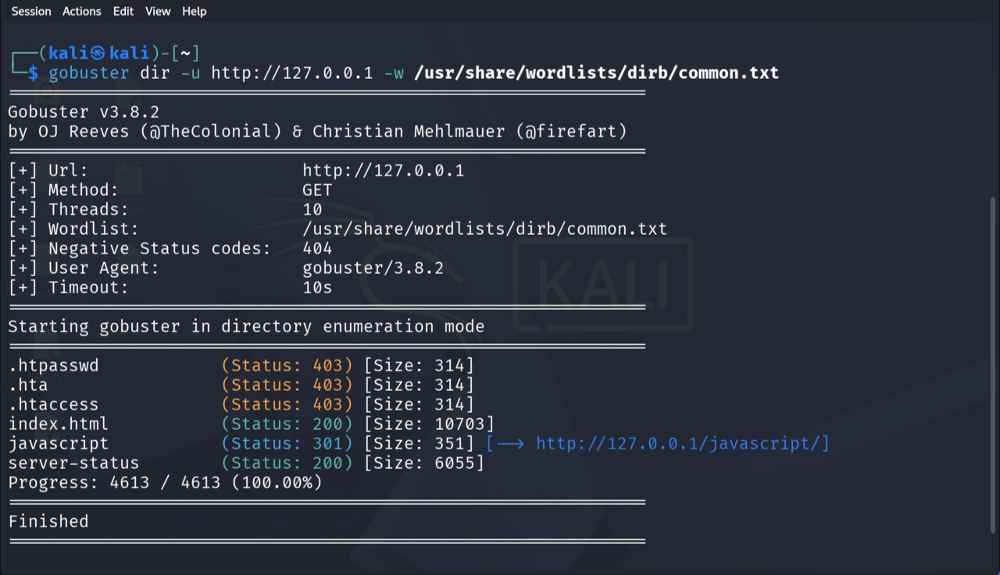
Gobuster: how it works
Gobuster checks for web paths by taking a base URL and trying candidate names from a wordlist. It sends HTTP requests for those paths and reports the responses—such as status codes and response sizes—for you to review. It helps discover paths; it does not prove that a path is vulnerable.
gobuster dir -u http://127.0.0.1 -w /usr/share/wordlists/dirb/common.txt.
Reading the example results:
- 200 OK — returned for
index.htmlandserver-status. - 301 Moved Permanently —
javascriptredirected to/javascript/. - 403 Forbidden — returned for
.htpasswd,.hta, and.htaccess; access was denied.
Most popular status code: HTTP Status Codes
- 200: OK
- 201: Created
- 202: Accepted
- 203: Non-Authoritative Information
- 204: No content
- 400: Bad Request
- 401: Unauthorized
- 403: Forbidden
- 404: Not Found
- 409: Conflict
- 500: Internal Server Error
- 501: Not Implemented
- 502: Bad Gateway
- 503: Service Unavailable
- 504: Gateway Timeout
- 599: Network Timeout
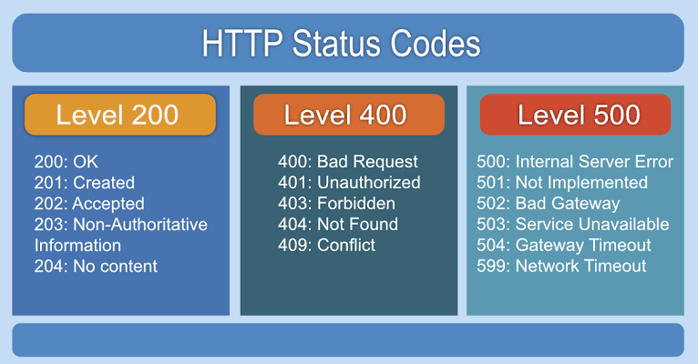
THIS is logs inside Wazuh
The Wazuh Discover dashboard showing 2,723 hits after ingesting /var/log/apache2/access.log from chadi-virtual-machine. The rule description field highlights: "Web scanning tool detected — reconnaissance activity from 127.0.0.1"
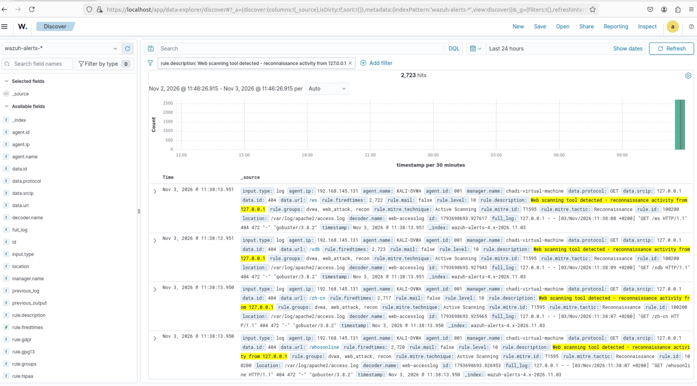
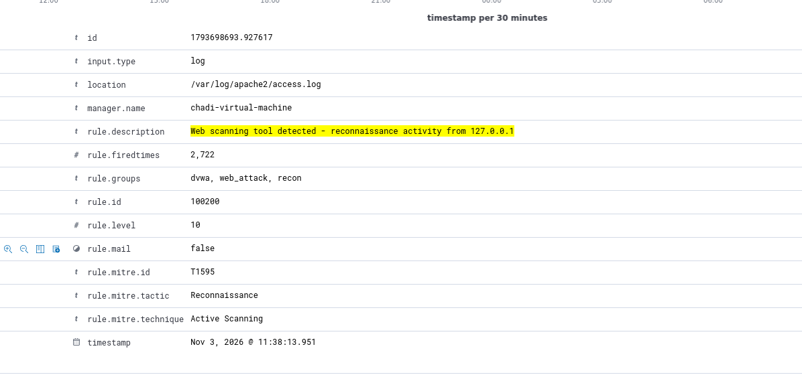
Custom Wazuh rule description
The rule.description field contains the message from my custom Wazuh rule: “Web scanning tool detected — reconnaissance activity from 127.0.0.1.” It summarizes the activity this rule matched. The description is the alert text; the detection logic is configured separately in the rule.
rule of detection:
<group name="dvwa,web_attack,recon,">
<rule id="100200" level="10">
<if_sid>31100</if_sid>
<regex type="pcre2">(?i)nikto|gobuster|dirbuster|nmap|sqlmap|masscan|wpscan</regex>
<description>Web scanning tool detected - reconnaissance activity from $(srcip)</description>
<mitre>
<id>T1595</id>
</mitre>
</rule>
</group><!-- Local rules -->
The rule uses a regular expression (regex) to check log entries for web-scanning tool names. (?i) makes the match case-insensitive, so capitalization does not matter. The | symbol means “or,” so the expression matches any listed name—for example, nikto , gobuster , dirbuster , or nmap . If the parent rule also matches, this rule can trigger and include the source IP ( srcip ) in its alert description.
Limitations of this rule
This rule is signature-based: it looks for known tool names in log entries instead of detecting scanning behavior itself. It may miss tools or activity that do not match the listed names, and it could alert on unrelated log entries containing one of those names.
127.0.0.1 && cat /etc/passwd
Discussion areas: Command Injection Fundamentals
command injection from a defensive SIEM and detection-engineering perspective.
- What command injection is and why unsafe input-to-command flows create risk
- Prevention and remediation
Command injection occurs when an application builds or invokes an operating-system command using untrusted input, allowing that input to be interpreted as part of the command rather than as data. If successful, this can let an attacker make the application perform unintended actions on the host, with the application’s permissions.
A web service uses a shell command to find a user-requested file. If it inserts the submitted filename directly into that command, the shell may interpret parts of the input as instructions instead of treating it as a filename. A safer approach is to use a file-handling API, or a process API that keeps the executable and arguments separate, while validating the filename.
Unsafe input-to-command handling, especially when input is passed through a shell.
Unauthorized actions, exposure or modification of data, and disruption of services; the extent depends on the application's privileges and environment.
Avoid shell invocation when possible; use safe process APIs with arguments kept separate from the command; validate input against a strict allowlist; run services with least privilege; and log and review command execution.
Baseline Application Behavior: Ping Diagnostic Utility
In DVWA (Damn Vulnerable Web Application), the feature provides a diagnostic network utility: "Ping a device". Under legitimate operations, a user enters a valid IP address (127.0.0.1) to test reachability.
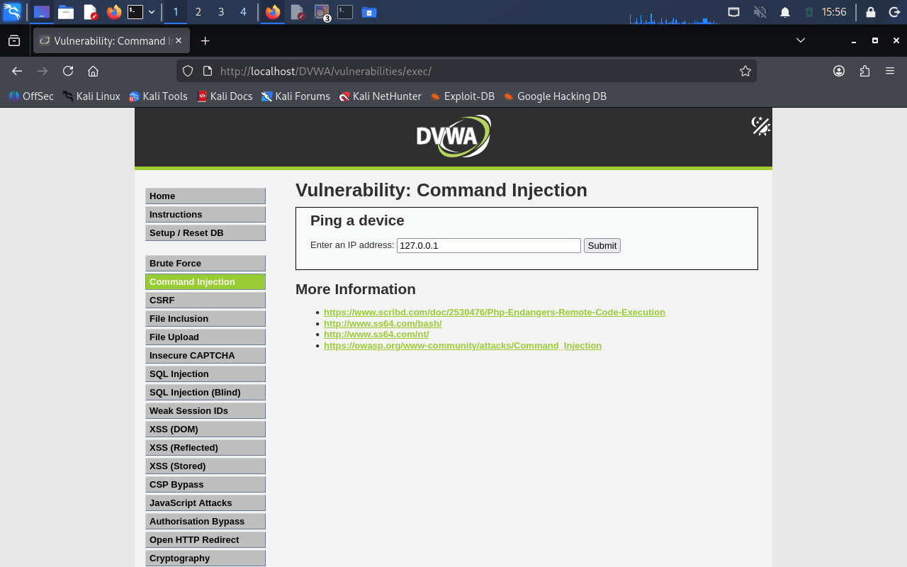
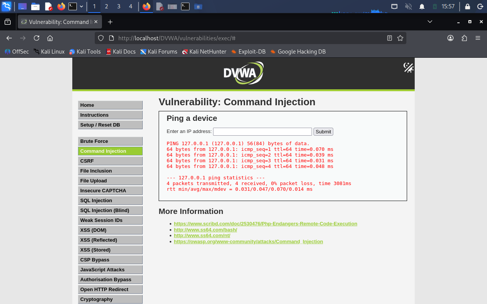
Command Injection Exploitation & Arbitrary File Disclosure
Here, the user wants to check whether an IP address is reachable. If the application passes the IP address to a shell without safely handling and validating the input, crafted input could be interpreted as command syntax and lead to command injection.
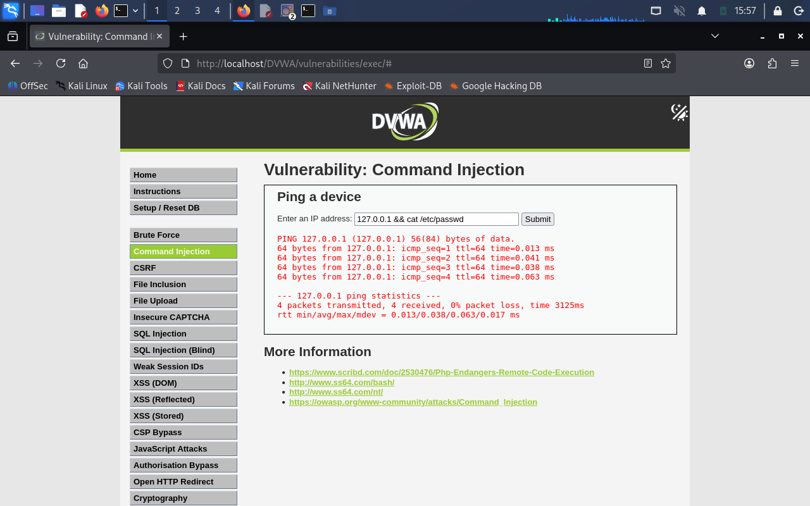
127.0.0.1 && cat /etc/passwd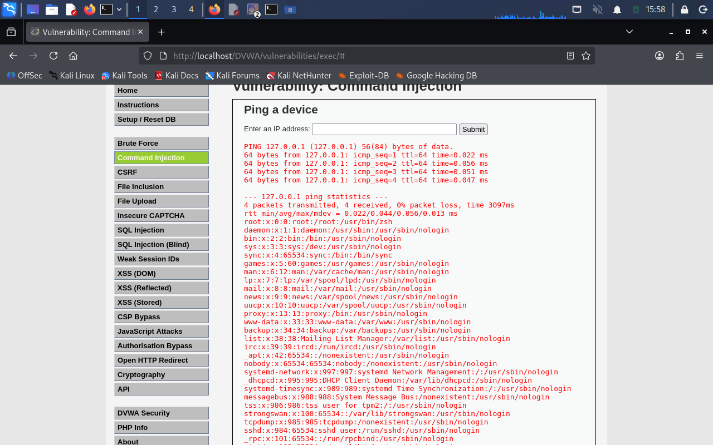
Common shell control operators that may be abused in command injection include ; , && , || , and | .
Detecting Command Injection with Wazuh
The security monitoring agent on KALI-DVWA monitors /var/log/dvwa-command-injection.log and streams telemetry directly into Wazuh SIEM. As soon as the malicious shell separator sequence and system command are executed, Wazuh logs the event and fires Rule 100100 (Level 10).
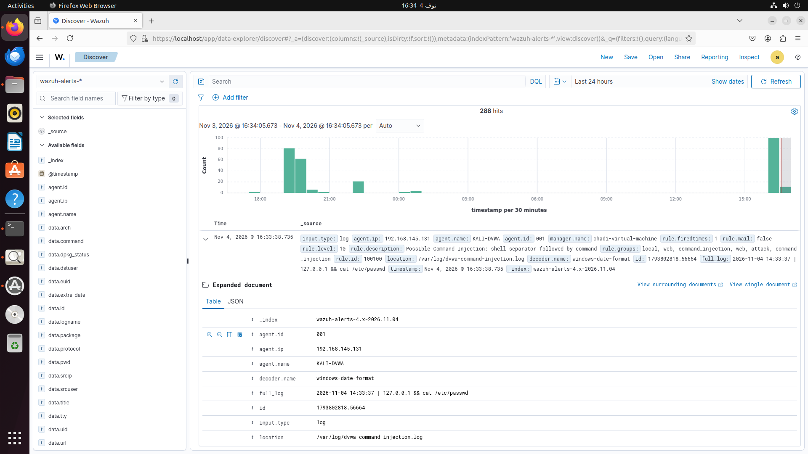
Rule detection : Architecture & PCRE2 Components
Detects potential OS command injection attempts by identifying command separators, optionally followed by whitespace or alternative space representations, and then common system commands.
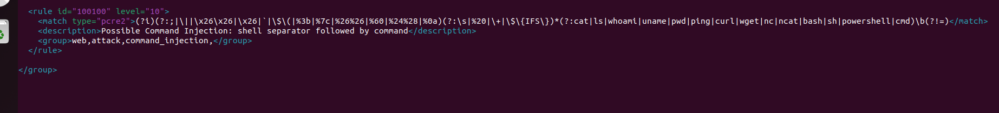
Formatted Wazuh Rule (XML):
<group name="web,attack,command_injection,">
<rule id="100100" level="10">
<match type="pcre2">(?i)(?:;|\||\x26|\x26\x26|\x3b|\x7c|\x26%26|%0a)(?:\s|%20|\+|\$\{IFS\})*(?:cat|ls|whoami|uname|pwd|ping|curl|wget|nc|ncat|bash|sh|powershell|cmd)\b(?!=)</match>
<description>Possible Command Injection: shell separator followed by command</description>
<mitre>
<id>T1059.004</id>
</mitre>
</rule>
</group>Main components breakdown:
-
1. Case Insensitivity
(?i)– Makes the match case-insensitive, preventing attackers from bypassing via mixed casing (e.g.,CaTorWhOaMi). -
2. Separator Detection
First group:
(?:;|\||\x26|\x26\x26|\x3b|\x7c|\x26%26|%0a)– Detects command separators (;,|,&,&&) and their URL-encoded hexadecimal forms (%3b,%7c,%26,%0anewline injection). -
3. Space & Obfuscation
Second group:
(?:\s|%20|\+|\$\{IFS\})*– Detects optional whitespace and alternative representations of spaces (standard spaces,%20,+, and internal field separator${IFS}used to bypass space filters). -
4. Common Commands
Third group:
(?:cat|ls|whoami|uname|pwd|ping|curl|wget|nc|ncat|bash|sh|powershell|cmd)– Detects common system commands adversaries execute to achieve initial reconnaissance, data discovery, and reverse shell connections. -
5. Word Boundary
\b– Requires a word boundary after the command, ensuring it matches complete command names rather than substrings of benign words (e.g., matchescat, but notcatalog). -
6. Negative Lookahead
(?!=)– Prevents a match if=immediately follows the command (avoids false positives on variable assignments or harmless query parameters such ascat=electronics).
Email header analysis and flow of the Email
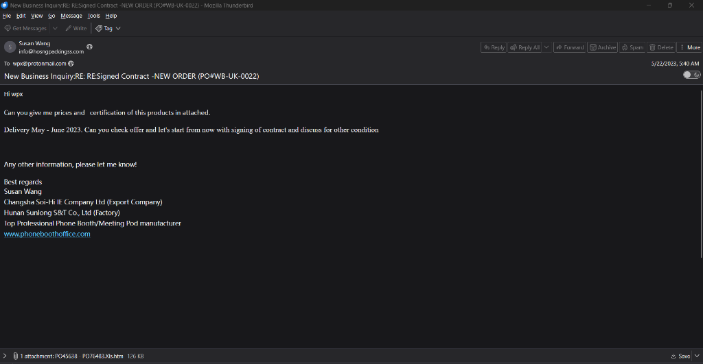
- Email from: Susan Wang <
info@hosngpackingss.com> - To the victim recipient:
wpx@protonmail.com - Subject:
New Business Inquiry:RE: RE:Signed Contract -NEW ORDER (PO#WB-UK-0022) - Check: SPF, DKIM, DMARC
Check SPF, DKIM, DMARC
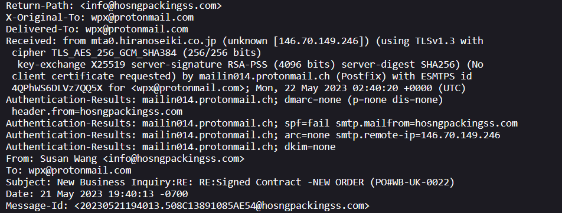
Return-Path: <info@hosngpackingss.com>
X-Original-To: wpx@protonmail.com
Delivered-To: wpx@protonmail.com
Received: from mta0.hiranoseiki.co.jp (unknown [146.70.149.246]) (using TLSv1.3 with
cipher TLS_AES_256_GCM_SHA384 (256/256 bits)
key-exchange X25519 server-signature RSA-PSS (4096 bits) server-digest SHA256) (No
client certificate requested) by mailin014.protonmail.ch (Postfix) with ESMTPS id
4QPhwS6DLVz7QQ5X for <wpx@protonmail.com>; Mon, 22 May 2023 02:40:20 +0000 (UTC)
Authentication-Results: mailin014.protonmail.ch; dmarc=none (p=none dis=none)
header.from=hosngpackingss.com
Authentication-Results: mailin014.protonmail.ch; spf=fail smtp.mailfrom=hosngpackingss.com
Authentication-Results: mailin014.protonmail.ch; arc=none smtp.remote-ip=146.70.149.246
Authentication-Results: mailin014.protonmail.ch; dkim=none
From: Susan Wang <info@hosngpackingss.com>
To: wpx@protonmail.com
Subject: New Business Inquiry:RE: RE:Signed Contract -NEW ORDER (PO#WB-UK-0022)
Date: 21 May 2023 19:40:13 -0700
Message-Id: <20230521194013.508C13891085AE54@hosngpackingss.com>Before checking the email’s authentication, let’s first understand its flow.
Flow of the Email
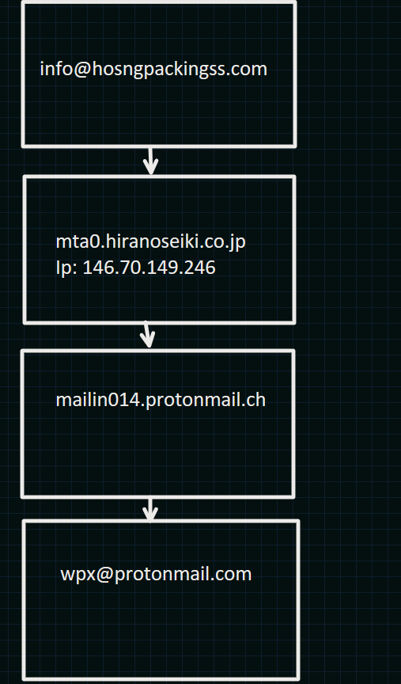
SPF
Next, let’s examine SPF to determine whether the sending IP address, 146.70.149.246, is authorized by the SPF policy for hosngpackingss.com to send email on its behalf. We compare the IP address with the domain’s published SPF record and explain the resulting SPF status: Pass, Fail, SoftFail, Neutral, or None. Keep in mind that SPF checks the envelope sender domain (often shown as the Return-Path), which may differ from the visible From address.
Result in the headers: spf=fail smtp.mailfrom=hosngpackingss.com
DKIM and DMARC
The DKIM result is None. This means the message did not include a DKIM signature that the receiving mail server could verify, so DKIM could not authenticate the email. This is different from Fail, which means a signature was present but did not validate. A “None” result alone does not prove that the message is fraudulent, but it means DKIM provides no confirmation that the message was authorized by the domain or remained unchanged in transit. We should consider this result alongside SPF, DMARC, and the other header details.
DMARC: the headers show dmarc=none (p=none dis=none). The domain’s policy is monitoring only, so nothing was quarantined or rejected.
The attachment file
The attachment (PO45638 - PO76483.Xls.htm) appears to present an HTML page styled to resemble a spreadsheet or Excel document. Instead of displaying a normal document, it prompts the recipient to enter their password. This behavior is consistent with a credential-phishing attempt: the familiar-looking file may be intended to make the request seem trustworthy, while the password prompt could expose the recipient’s login credentials. The appearance of the attachment alone does not confirm who created it or where any submitted information would go, so it should be treated as suspicious. Do not enter credentials or open it further; report the message and verify its legitimacy through a separate, trusted channel.
Banco Bradesco (Livelo) Phishing Lure & Social Engineering
This message is about the reward points earned by customers of Banco Bradesco, a major Brazilian bank. It tells cardholders that the Livelo points associated with their Banco Bradesco card are due to expire today and urges them to redeem their Visa Infinite points promptly:
"You have Livelo points associated with your Banco Bradesco card available for redemption, which expire TODAY. Avoid losing these points by redeeming your Visa Infinite points right now. You, Banco Bradesco customers, accumulate Livelo points every time you use your cards for debit or credit transactions. It's quick and easy to accumulate points."
⚡ Lure Hook: 92.990 MIL PONTOS ACUMULADOS EXPIRAM HOJE — High-urgency button: "Resgatar Agora" (Redeem Now)
The message also explains that customers can earn Livelo points through debit and credit card transactions, encouraging them to use their rewards before they expire. The attackers exploit cognitive bias: artificial time pressure ("TODAY") and loss aversion to force the victim into bypassing security caution.
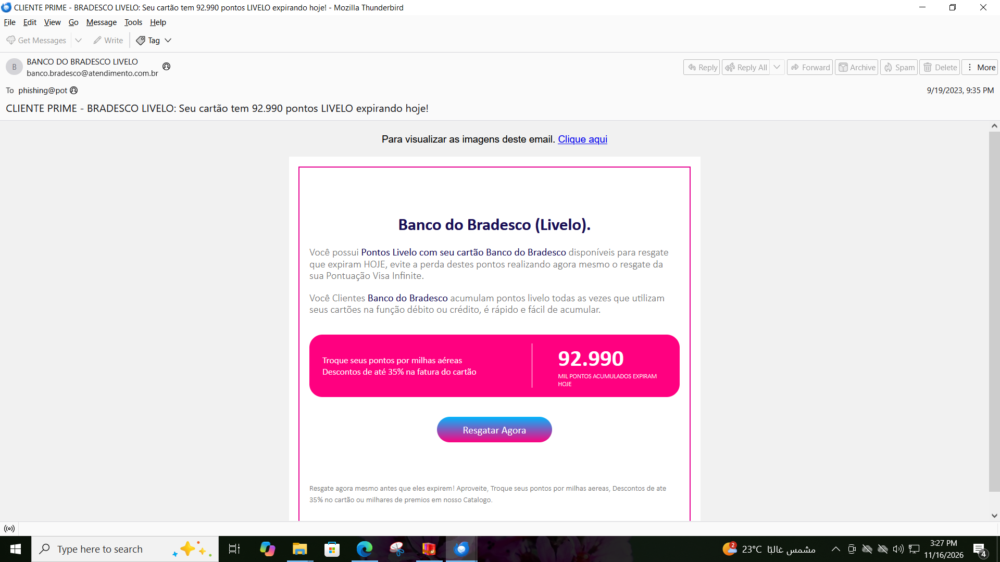
Full Email Header Forensic Dissection & Authentication Results
Inspecting the message source in Mozilla Thunderbird exposes the authentic cloud hosting origin, relay hops across Microsoft Exchange Online Protection (EOP), and authentication records:
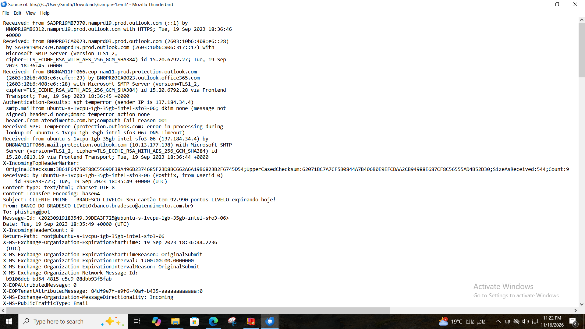
137.184.34.4 · spf=temperror · dkim=none · compauth=fail [Screenshot 36]Extracted Critical Header Lines:
Return-Path: <root@ubuntu-s-1vcpu-1gb-35gb-intel-sfo3-06>
Received: from SA3PR19MB7370.namprd19.prod.outlook.com ... by MN0PR19MB6312.namprd19.prod.outlook.com ...
Received: from BN0PR03CA0023.outlook.office365.com ... by SA3PR19MB7370.namprd19.prod.outlook.com ...
Received: from BN8NAM11FT066.eop-nam11.prod.protection.outlook.com ... by BN0PR03CA0023.outlook.office365.com ...
Received: from ubuntu-s-1vcpu-1gb-35gb-intel-sfo3-06 (137.184.34.4) by
BN8NAM11FT066.mail.protection.outlook.com (10.13.177.138) with Microsoft SMTP
Server (version=TLS1_2, cipher=TLS_ECDHE_RSA_WITH_AES_256_GCM_SHA384) id 15.20.6813.19
via Frontend Transport; Tue, 19 Sep 2023 18:36:44 +0000
Authentication-Results: spf=temperror (sender IP is 137.184.34.4)
smtp.mailfrom=ubuntu-s-1vcpu-1gb-35gb-intel-sfo3-06; dkim=none (message not
signed) header.d=none; dmarc=temperror action=none
header.from=atendimento.com.br; compauth=fail reason=001
Received-SPF: TempError (protection.outlook.com: error in processing during
lookup of ubuntu-s-1vcpu-1gb-35gb-intel-sfo3-06: DNS timeout)
From: BANCO DO BRADESCO LIVELO <banco.bradesco@atendimento.com.br>
To: phishing@pot
Subject: CLIENTE PRIME - BRADESCO LIVELO: Seu cartão tem 92.990 pontos LIVELO expirando hoje!
Date: Tue, 19 Sep 2023 18:35:49 +0000 (UTC)Email Transmission Flow & Infrastructure Routing
Tracing the message from its originating cloud instance through Microsoft's cloud protection pipeline reveals the complete transmission flow:
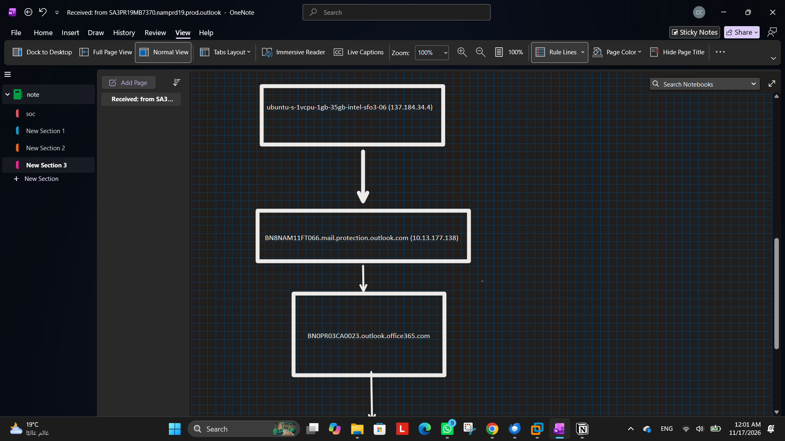
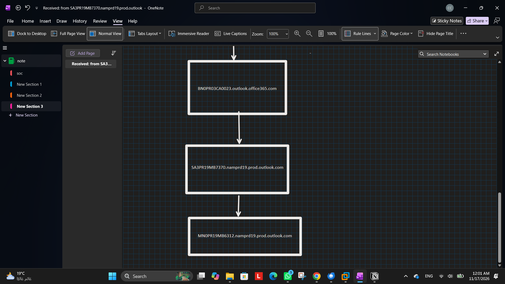
SPF, DKIM, and DMARC Analysis
The message was sent from the server with IP address 137.184.34.4 to Microsoft’s mail-protection server, BN8NAM11FT066.mail.protection.outlook.com (10.13.177.138). The receiving server then evaluated the message’s email-authentication records:
ubuntu-s-1vcpu... caused DNS lookup timeout.
header.d=none.
atendimento.com.br; temporary lookup error.
The reported envelope sender was ubuntu-s-1vcpu-1gb-35gb-intel-sfo3-06. This appears to be the sending server’s hostname, rather than a fully qualified domain configured for sending email. SPF checks DNS for the domain used in the SMTP envelope sender (and may also check the HELO/EHLO identity). In this case, the receiver could not complete the DNS lookup and reported a timeout. Therefore, SPF did not pass; the result was temperror, which means the check could not be completed, rather than a definitive SPF fail.
The message was not signed with a DKIM signature. That is why the result shows dkim=none and header.d=none. No public key cryptography was available to verify the integrity of the body or the authenticity of the originating domain.
The visible From address used atendimento.com.br. DMARC checks whether a passing SPF or DKIM identity aligns with this From domain. The receiver reported dmarc=temperror, consistent with the temporary SPF lookup problem and the absence of a DKIM signature. Microsoft’s composite authentication also failed, as shown by compauth=fail reason=001.
Threat Assessment, Phishing Findings & User Safety Guidance
Taken together, the available evidence makes this email highly suspicious and consistent with a possible phishing attempt:
- Urgency Pressure: The message uses urgency by claiming that the Livelo points expire “TODAY” and encouraging the recipient to redeem them immediately, a tactic commonly used to pressure people into clicking links or sharing sensitive banking information.
- Inconclusive / Failed Authentication: The authentication results raise significant concerns: SPF returned
temperror(lookup failed due to local hostname instead of FQDN), the message had no DKIM signature, and Microsoft reported bothdmarc=temperrorandcompauth=fail. - Authentication Limits: These results indicate that the message’s authenticity could not be reliably verified, but they do not, by themselves, conclusively prove who sent it or establish that it is fraudulent.
Based on the combination of urgency and failed or inconclusive authentication checks, treat the email as potentially phishing: do not click its links, open unexpected attachments, reply with personal or banking information, or enter credentials from a link in the message. If you need to check your points, open the official Banco Bradesco or Livelo app or type the organization’s known official website address yourself, and contact the organization through a verified channel. Unless the sender and the message are independently confirmed, the safest conclusion is that this email is suspicious and should not be trusted.
SOC Incident Response, Containment & IOC Matrix
Containment actions executed for the banking phishing campaign:
- Mail Gateway Ingestion Block: Block IP
137.184.34.4on firewall perimeter and Secure Email Gateway. - SIEM Sweeping: Query SIEM across Microsoft Defender for Office 365 logs for any emails matching subject
*pontos LIVELO expirando hoje*. - Domain Impersonation Rule: Configure DMARC quarantine policy and strict transport security for protected financial domains.
Indicators of Compromise (IOCs):
| Indicator Type | Observable Value | Context & Detection Notes |
|---|---|---|
| Sending IP Address | 137.184.34.4 |
DigitalOcean VPS (SFO3 region) · Unauthorized relay / botnet node |
| Envelope Sender | root@ubuntu-s-1vcpu-1gb-35gb-intel-sfo3-06 |
Non-FQDN local hostname causing DNS lookup timeout / SPF TempError |
| Claimed From Header | banco.bradesco@atendimento.com.br |
Spoofed Banco Bradesco customer support identity |
| Receiving EOP MTA | BN8NAM11FT066.mail.protection.outlook.com |
Microsoft inbound security gateway evaluating authentication |
| Targeted Mailbox | phishing@pot |
Target inbox / honeypot capture address |
| MITRE ATT&CK | T1566.002 / T1056.001 |
Phishing: Spearphishing Link · Input Capture: Credential Phishing |
1' OR '1'='1 via HTTP GET Parameter
low.php without prepared statements
In-Band SQL Injection Fundamentals & Communication Channel Architecture
In-band SQL injection analyzed from a defensive SOC analyst, code auditing, and detection engineering perspective.
In-band SQL injection is a type of SQL injection in which the application uses the same communication channel to receive a request and return information. It is often considered the most straightforward variant to understand because the outcome of an unsafe database query may appear directly in the application's normal response.
- Attacker Input: The attacker sends input that causes the application to construct an unintended database query.
- Single-Channel Feedback: The application returns the query's result or an error through the same page, response, or other channel used for the original request.
- Application & Data Exposure: Depending on the application's weaknesses and the data accessible to the affected query, this can expose information or interfere with normal application behavior.
- Direct Data & Error Leakage: The visible result may be direct data in a response or clues in error messages; detailed errors can reveal unnecessary information about the application's database handling.
The defining feature is that the request and the observable result travel through the same channel. This distinguishes in-band SQL injection from other variants where results are inferred indirectly (Blind/Inferential SQLi via timing or boolean checks) or delivered through a separate channel (Out-of-Band SQLi using DNS/HTTP exfiltration).
Unsafe dynamic query construction concatenating user input directly into SQL statements without prepared statements or parameterized queries.
Unauthorized database disclosure (user credentials, PII, schema dumping), data modification, and authentication bypass.
Parameterized queries (prepared statements), strict input type validation, least-privilege DB service accounts, and suppressing detailed database errors.
Vulnerable Source Code Dissection: DVWA low.php
Analyzing the underlying PHP backend code in DVWA reveals why the vulnerability exists. In vulnerabilities/sqli/source/low.php, user input is retrieved directly from the HTTP request and concatenated into the SQL statement without escaping or parameter binding.
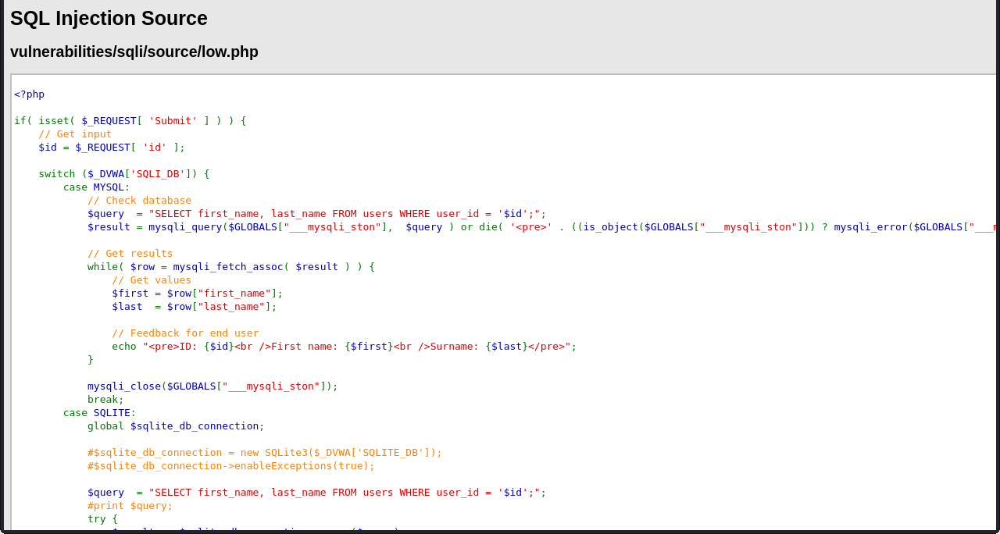
Vulnerable Backend Code (PHP):
<?php
if( isset( $_REQUEST[ 'Submit' ] ) ) {
// Get input directly from HTTP request without validation
$id = $_REQUEST[ 'id' ];
switch ($_DVWA['SQLI_DB'] ) {
case MYSQL:
// VULNERABLE: Direct variable interpolation creates an exploitable SQL query
$query = "SELECT first_name, last_name FROM users WHERE user_id = '$id';";
$result = mysqli_query($GLOBALS["___mysqli_ston"], $query )
or die( '<pre>' . ((is_object($GLOBALS["___mysqli_ston"])) ?
mysqli_error($GLOBALS["___mysqli_ston"]) :
(($___mysqli_res = mysqli_connect_error()) ? $___mysqli_res : false)) . '</pre>' );
// Get results and output directly to the HTTP response
while( $row = mysqli_fetch_assoc( $result ) ) {
$first = $row["first_name"];
$last = $row["last_name"];
echo "<pre>ID: {$id}<br />First name: {$first}<br />Surname: {$last}</pre>";
}
mysqli_close($GLOBALS["___mysqli_ston"]);
break;
}
}
?>An ID parameter should be checked against its intended format, but input validation alone is not a reliable defense against SQL injection. If an application builds a SQL statement by directly concatenating the supplied ID into the query, specially crafted input may change how the database interprets that query.
This could cause the application to return records beyond the one requested, depending on the query, the application's behavior, and the database account's permissions. It does not automatically reveal the entire database: the result is limited by the particular query and the access available to the application. The primary protection is to use parameterized queries (prepared statements), so the ID is treated strictly as data rather than executable SQL.
Baseline Application Behavior vs. Tautology Exploitation
Testing the application reveals the stark contrast between intended operation and malicious exploitation.
As explored in the technical investigation: "If I enter, for example, 1' OR '1'='1 , will it retrieve all the data in the users table?"
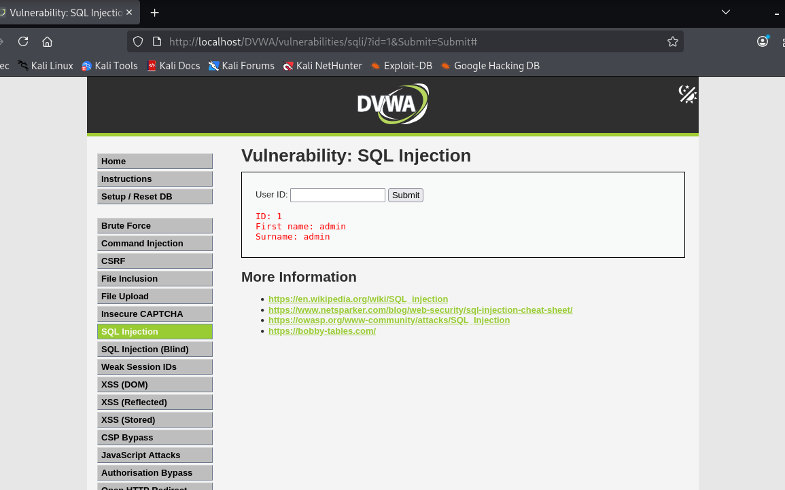
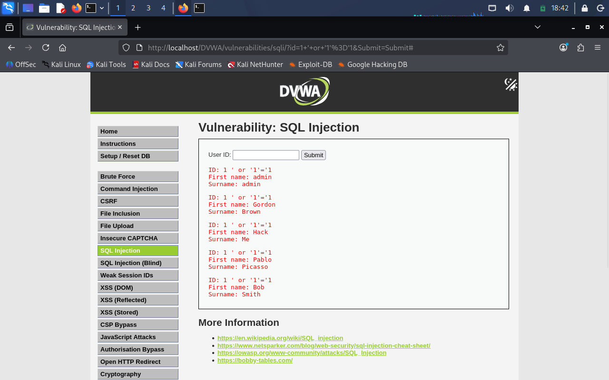
Normal Query: SELECT first_name, last_name FROM users WHERE user_id = '1';
Returns exclusively the single record matching user_id = 1 (admin).
Injected Query: SELECT first_name, last_name FROM users WHERE user_id = '1' or '1'='1';
Because '1'='1' is a tautology (always evaluates to TRUE), the WHERE condition succeeds for every single row in the users table, dumping all 5 accounts (admin, Gordon Brown, Hack Me, Pablo Picasso, and Bob Smith).
Detection and Telemetry Ingestion in Wazuh SIEM
The web application runs on endpoint KALI-DVWA (Agent 001) at IP 192.168.145.131, with web server logs streamed from /var/log/apache2/access.log to the Wazuh SIEM manager chadi-virtual-machine. The moment the malicious HTTP GET request with URL-encoded characters is submitted, Wazuh correlates the event.
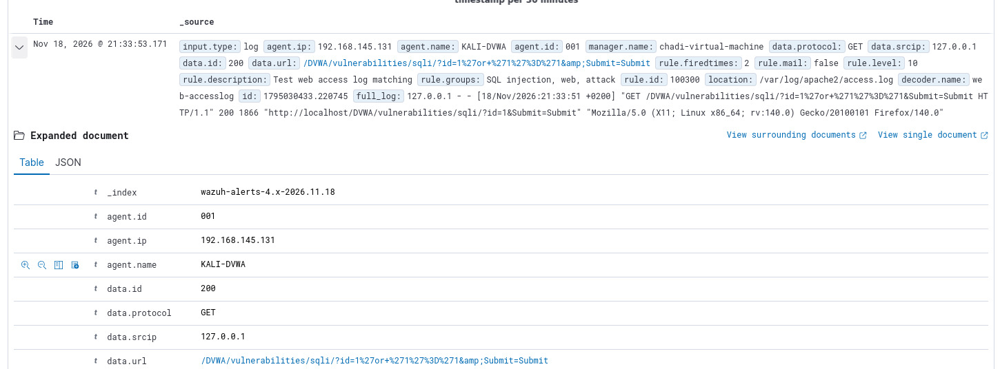
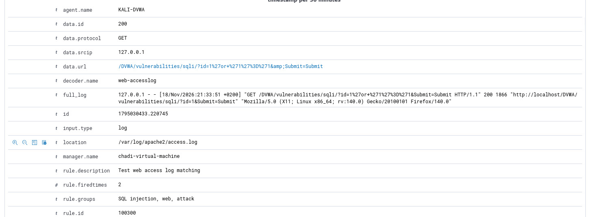
Raw Telemetry Event (Apache Access Log):
127.0.0.1 - - [18/Nov/2026:21:33:51 +0200] "GET /DVWA/vulnerabilities/sqli/?id=%27+or+%271%27%3D%271&Submit=Submit HTTP/1.1" 200 7866 "http://localhost/DVWA/vulnerabilities/sqli/?id=1&Submit=Submit" "Mozilla/5.0 (X11; Linux x86_64; rv:140.0) Gecko/20100101 Firefox/140.0"Correlated SIEM Forensic Fields:
| SIEM Field Name | Extracted Telemetry Value | Forensic Context |
|---|---|---|
agent.name / agent.id |
KALI-DVWA (001) |
Compromised web server hosting vulnerable DVWA deployment |
agent.ip |
192.168.145.131 |
Internal lab IPv4 address of the target Linux host |
manager.name |
chadi-virtual-machine |
Centralized Wazuh SIEM manager node performing correlation |
location |
/var/log/apache2/access.log |
Apache HTTP Server access log file collected via Wazuh agent |
data.protocol / data.id |
GET / 200 |
HTTP GET method resulting in HTTP 200 OK server response |
data.url |
/DVWA/vulnerabilities/sqli/?id=%27+or+%271%27%3D%271&Submit=Submit |
URL path containing encoded payload: %27 (') + or + %271%27%3D%271 ('1'='1') |
rule.id / rule.level |
100300 / Level 10 |
High-severity alert indicating confirmed web application attack |
rule.groups |
SQL Injection, web, attack |
Wazuh taxonomy groups mapping incident to web attack category |
Custom Wazuh Rule 100300 Architecture & PCRE2 Pattern Breakdown
To detect this attack with high fidelity and zero false positives, a custom detection rule was engineered into Wazuh using the PCRE2 regex engine. The rule inspects incoming HTTP request URLs for both encoded injection sequences and high-risk SQL keywords.
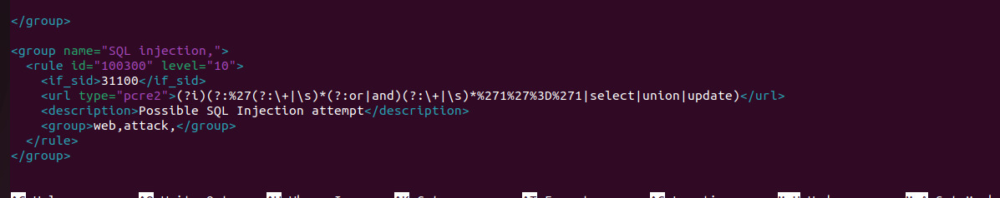
Formatted Wazuh Detection Rule (XML):
<group name="SQL Injection,">
<rule id="100300" level="10">
<if_sid>31100</if_sid>
<url type="pcre2">(?i)(?:%27(?:|\s)*(?:or|and)(?:|\s)*%271%27%3D%271|select|union|update)</url>
<description>Possible SQL Injection attempt</description>
<group>web,attack,</group>
</rule>
</group>How to Read the Pattern:
-
1. Ignore Case
(?i)— Matches uppercase and lowercase letters equally without case restriction (e.g.OR,or,Or,SELECT,select,UnIoN). -
2. Non-Capturing Group
(?:...)— Organizes alternatives and sub-expressions together without storing a captured backreference in memory, maximizing regex engine performance. -
3. Encoded Apostrophe
%27— Represents the URL-encoded single quote ('), which is the universal delimiter attackers use to break out of SQL string literals. -
4. Flexible Separators
(?:\+|\s)*— Matches zero or more plus signs (+) or whitespace characters (\s) between keywords, accounting for variations in URL encoding across different browsers and automated scanners. -
5. Logical Operators
(?:or|and)— Matches either boolean logical operator (ORorAND) commonly leveraged in boolean-based tautology injections. -
6. Encoded Condition
%271%27%3D%271— Represents the exact URL-encoded text'1'='1'(where%27is'and%3Dis=). -
7. Alternative Branch
|— Lets the pattern match any one of several options: either the quote-based boolean injection sequence OR standalone SQL command keywords. -
8. Keyword Checks
select , union , update— Matches these listed SQL keywords independently of the quote-based pattern, catching UNION-based extraction, data exfiltration, or table modification attempts.
Defense-in-Depth, Remediation & Countermeasures
Securing applications against SQL injection requires a multi-layered defense combining secure software development with network and SIEM perimeter controls:
- Parameterized Queries (Prepared Statements): The gold-standard mitigation. Using PDO or MySQLi prepared statements guarantees the database engine compiles the query structure first, treating user input strictly as literal data rather than executable SQL.
- Input Validation & Type Casting: Enforce strict data type constraints (e.g. casting ID parameters with
intval($id)or validating withfilter_var($id, FILTER_VALIDATE_INT)). - Least-Privilege Database Accounts: The web application database user should only have
SELECT,INSERT,UPDATEpermissions on required tables, withDROP,ALTER, and administrative procedures revoked. - Suppress Detailed Database Errors: Disable
mysqli_error()and error display in production (display_errors = Offinphp.ini). Log errors internally to prevent leaking schema information. - WAF & SIEM Active Response: Combine Wazuh Rule 100300 with an automated active response script to temporarily null-route or firewall IP addresses generating repeated SQL injection alerts.
Ready to Strengthen Your Security Posture?
I am actively seeking opportunities as a SOC Analyst (Tier 1 / Tier 2), Threat Hunter, or Incident Responder. Let's discuss how I can contribute to your Security Operations team.